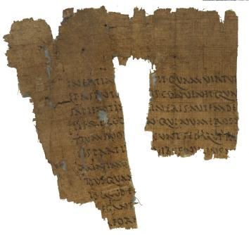

Latin Philosophical Treatise
(?).
AM 4095 (=P. Oxy. VI 871). III/ IV c. AD (?)

Also
available: a larger image (274k)
Background and Physical
Properties
Publ./Side: Recto
Material: Papyrus
Items: 1
Size: 12.3 x 12.9 cm.
Lines: 11
Negative: Transparency
Conservation Status:
Status: Published
--------------------------------------------
Contents
Date: V c. AD (?)
Provenance: Oxyrhynchus, Oxyrhynchite nome, province of Egypt
Acquisition: AM 4095
Language: Latin
Genre: Literary
Author: Unknown
Type of Text/Title of Work: Latin Philosophical Treatise (?).
Content: Contains the relatively rare word astutia. Cursive
Greek on verso.
--------------------------------------------
Information on Publications
First edition:
Series and volume: The Oxyrhynchus Papyri VI
Editor: B. P. Grenfell and A. S. Hunt
Year: 1908
Pg/Nr: 871
Photo:
E.A. Lowe, Codices Latini antiquiores CLA 11 1666;
Robert Cavenalle,
Corpus papyrorum latinarum CPL 47.